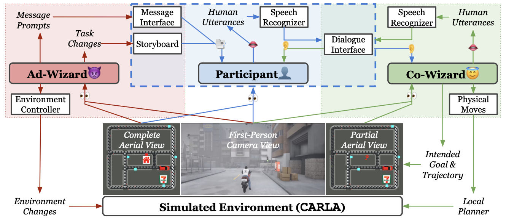
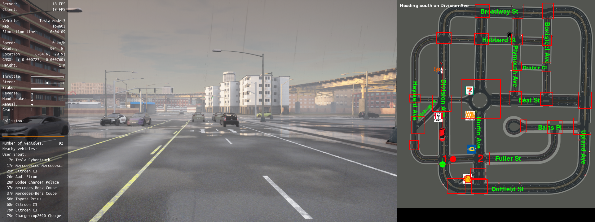

Conferece on Empirical Methods in Natural Language Processing (EMNLP 2022)
[pdf][code]
Abstract
In the real world, autonomous driving agents navigate in highly dynamic environments full of unexpected situations
where pre-trained models are unreliable. In these situations, what is immediately available to vehicles is often
only human operators. Empowering autonomous driving agents with the ability to navigate in a continuous and dynamic
environment and to communicate with humans through sensorimotor-grounded dialogue becomes critical. To this end, we
introduce Dialogue On the ROad To Handle Irregular Events (DOROTHIE), a novel interactive simulation platform that
enables the creation of unexpected situations on the fly to support empirical studies on situated communication with
autonomous driving agents. Based on this platform, we created the Situated Dialogue Navigation (SDN), a navigation
benchmark of 183 trials with a total of 8415 utterances, around 18.7 hours of control streams, and 2.9 hours of trimmed
audio. SDN is developed to evaluate the agent's ability to predict dialogue moves from humans as well as generate its own
dialogue moves and physical navigation actions. We further developed a transformer-based baseline model for these
SDN tasks. Our empirical results indicate that language guided-navigation in a highly dynamic environment is an
extremely difficult task for end-to-end models. These results will provide insight towards future work on robust
autonomous driving agents.

Dialogue On the ROad To Handle Irregular Events (DOROTHIE)
Dialogue On the ROad To Handle Irregular Events (DOROTHIE) is a simulation framework developed upon CARLA
to study situated human-vehicle communication based on the Wizard-of-Oz (WoZ) setting. We extend the traditional
single-wizard to a duo-wizard setup approach by introducing a pair of Wizards. For detailed description of the simulation,
please refer to Appendex A in the paper.
Co-Wizard Interface
The Cooperative-Wizard controls the agent's behaviors and carries language communication with the human
participant to jointly achieve the goal. Down below is an example of Co-Wizard interface.

Ad-Wizard Interface
The Adversarial-Wizard controls the environment and task interface and introduces unexpected situations
such as road blocks and goal manipulation on-the-fly.
Example
Down below is example dialogue with annotations. For details in annotation, please refer to Appendex B in the paper.
Each color bar represents a transaction unit and each box represents an exchange unit. The tasks challenge the agent to understand
the input dialogue move and imitate Co-Wizard's decision on the next navigation action and dialogue move to take.
Temporally-Ordered Task-Oriented Transformer (TOTO) is temporally-ordered as it assigns sinusoidal temporal encodings
for input histroy instead of recurrent updates of hidden state, and is task-oriented as a unified architecture for 3
Situated Dialogue Naviagation (SDN) benchmark, Dialogue Understanding for Navigation (UfD), Dialogue Response for Navigation (RfN),
and Navigation from Dialogue (NfD). For detailed description of SDN task definition, please refer to Section 5 in the paper.